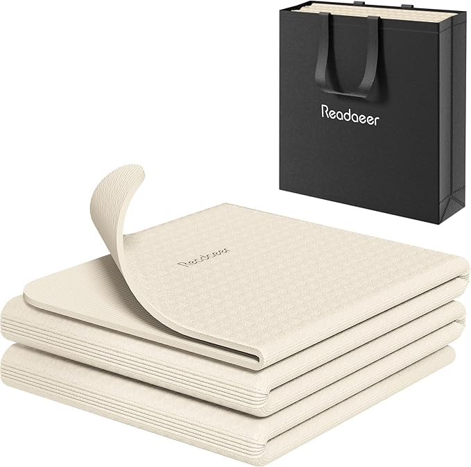
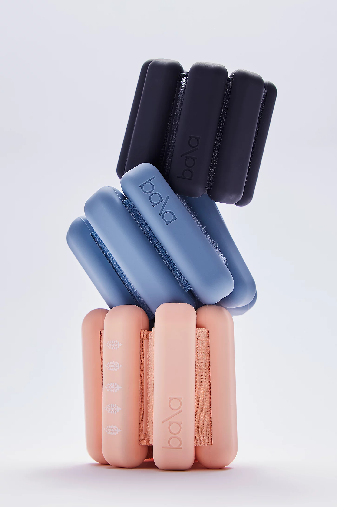
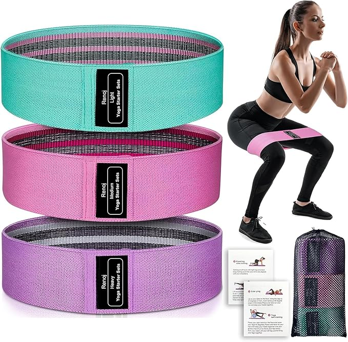
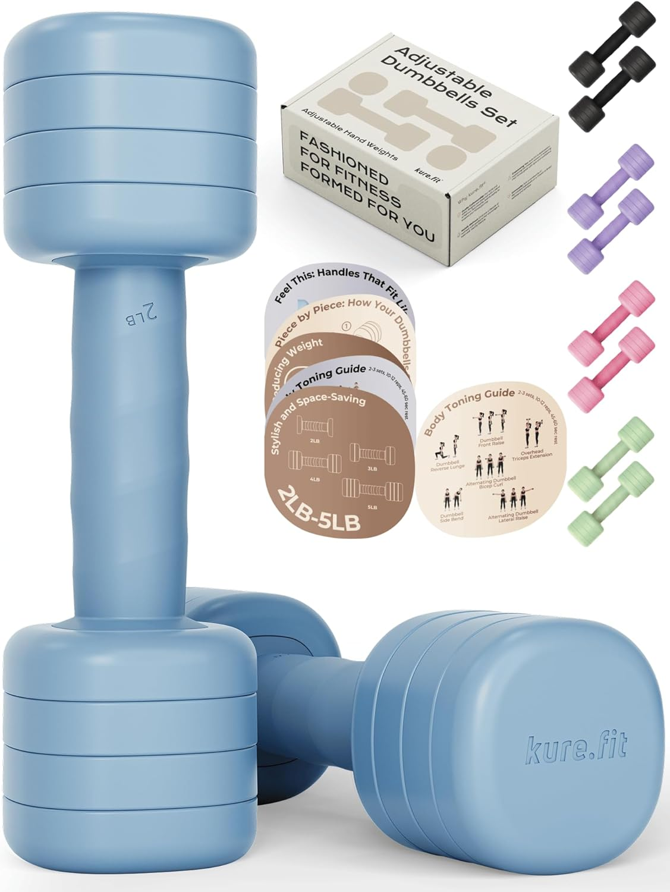
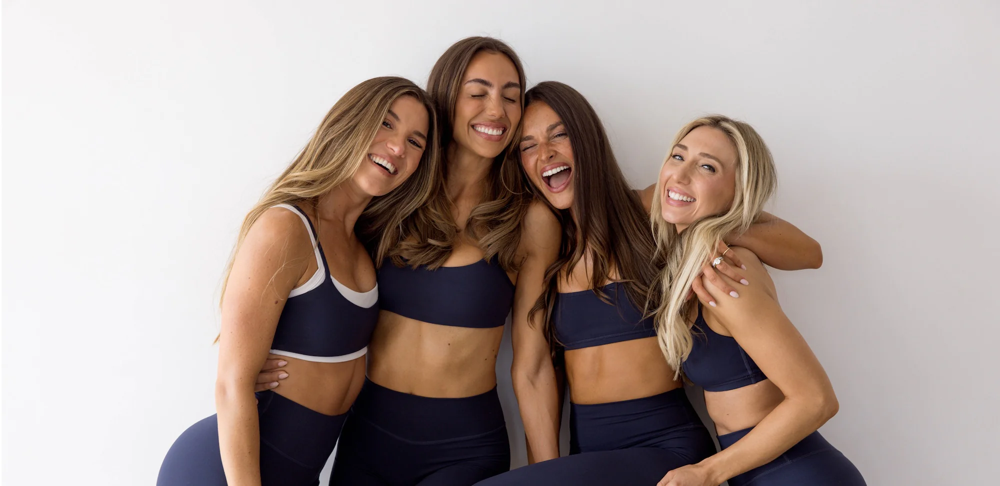

Physical health is my mental health — that's just always been true for me. So getting back to moving my body as soon as I safely could after labor wasn't optional, it was necessary. Between a newborn's schedule, sleep deprivation, and a body that just did something incredible, figuring out how to actually do that took some trial and error.
What I landed on: a handful of affordable at-home pieces and one app that genuinely changed everything. I'll do a more detailed post on my favorite exercises from weeks 0–6, but this one is focused on week 6 and beyond — when you're cleared and ready to actually push it.
The equipment list below is not complicated, and that's the point. Heavy focus on resistance and barre training — this exact setup got me into some of the best shape of my life. No gym membership required.
The Equipment
Yoga Mat — Readaeer Foldable
The Foundation
A good mat is non-negotiable, and this one wins on all three things I care about: it folds flat so it stores anywhere, the TPE material feels soft and grippy at the same time, and honestly it just looks nice. Double-sided anti-slip means it stays put on any floor, and it comes with its own carrying bag. For the price, there's nothing I'd swap it for.
Shop on Amazon →Bala Bangles
The Burner
These need no explanation if you know, you know. Bala Bangles are weighted cuffs that strap to your wrists or ankles and make every single movement harder without changing what you're doing. During barre, pilates, or any floor work, they add constant low-level resistance that burns in the best possible way. The 1 lb weights sound like nothing — strap them on for 30 minutes and report back.
Shop on Amazon →Booty Bands
Glutes & Hips
Resistance bands are one of the most underrated postpartum tools. They rebuild hip and glute strength — exactly what your body needs after pregnancy — without putting stress on joints that are still recovering. This set comes in multiple resistance levels so you can progress as you get stronger. I use these in almost every lower body session.
Shop on Amazon →Adjustable 2–5 lb Weights
Upper Body
For postpartum upper body work, you don't need to go heavy. Light weights with high reps and controlled movement is where the magic is, especially paired with barre-style training. These adjustable ones go from 2 to 5 lbs with a single twist, so they grow with you as you rebuild strength. The non-slip handle is a nice touch when you're sweaty mid-workout.
Shop on Amazon →The Workout Plan
Equipment is only half of it. The other half — the part that actually made me feel like myself again — was finding the right program. And I found it.
The FORM App
The Best Money I Spent
Start with the postpartum program — it's designed specifically for where your body is right now, and it progresses exactly as fast as you need it to. Once you're through it, the rest of the app opens up, and that's where Grace's workouts come in. Her vibe is everything. She will burn you out in the best way possible in whatever short window of time you have.
This app fixed a 3-inch diastasis. I look the best I have looked in my entire life. I'm not being dramatic — I genuinely could go on and on. It is the single best money I spent postpartum, full stop.
Check Out FORM →That's the full setup. A mat, two kinds of weights, a set of bands, and one app subscription. That's it. You don't need a gym, a babysitter, or an hour of uninterrupted time. You need 20–30 minutes on your living room floor and these tools — and it will work.
Stay tuned for my next post on exactly what I was doing from weeks 0–6, before being cleared for full workouts.